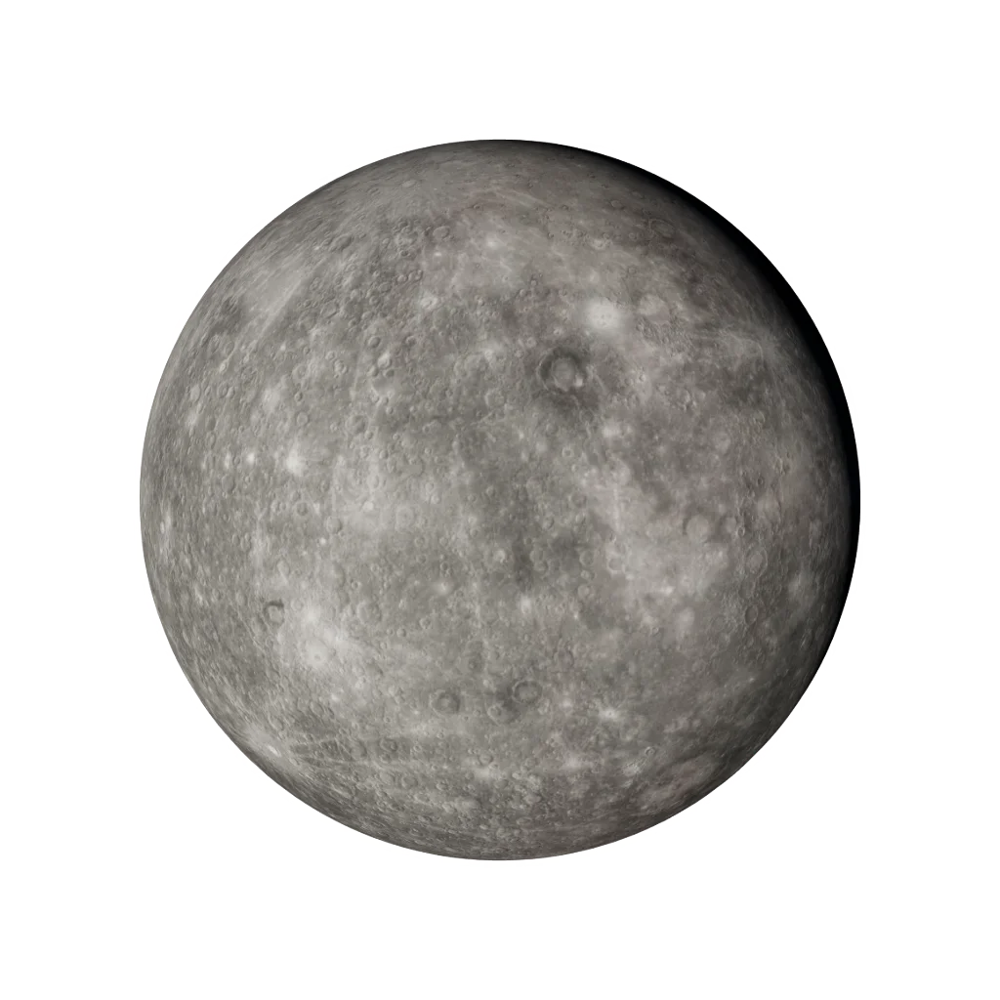

Virgo
August 23 – September 22
“I analyse”
Virgo Horoscope Today
Computed from live planetary positions — same VSOP87 engine as the orrery
Today's Virgo reading is calculated in your browser from real planetary positions. If this text remains, enable JavaScript to see your personalised daily guidance — or read the complete Virgo profile below.
About Virgo
Virgo is the zodiac's craftsman — the sign that sees how things could be better, and then quietly makes them so. Ruled by Mercury in its analytical mode, Virgo perceives detail invisible to every other sign. Its devotion is practical: love expressed as help, care expressed as competence, idealism expressed as the patient repair of an imperfect world.
The Astronomy of Virgo
The precise, factual layer beneath the character — where Virgo actually sits in the sky.
the element of the tangible — earth signs are grounded, practical and built to last.
the adapting mode — mutable signs flex, blend and prepare the way for change.
Mercury, the planet of analysis, craft and useful detail.
Virgo is the 150°–180° band of the zodiac circle. The Sun crosses it around 23 Aug – 22 Sep each year — the exact day shifts by about a day year to year, which is why the dates are approximate.
Virgo in Your Chart
Most people meet Virgo as a "star sign". In a real birth chart it can appear in three very different places — and each one means something distinct.
Your core self — the "Virgo side" people mean when they ask your sign. It shapes your basic character and what makes you feel most yourself.
Your inner, emotional world — how you feel, comfort yourself and respond in private. Two people with a Virgo Moon share an emotional language, whatever their Sun sign.
How you meet the world — your outward style and first impression. Your Rising is set by the exact time and place you were born, so it needs your birth time to know.
Your Sun sign is a third of the picture
Your Sun is one of ten planets the engine computes — Sun through Pluto — plus your Rising and your houses. Cast your free chart to find your real Sun, Moon and Rising.
Cast My Free ChartThen compare your chart with the eclipse in the Eclipse contact instrument →
Virgo Strengths & Challenges
Strengths
- Precision and discernment
- Service without need for applause
- Reliability in the details others miss
- A mind that genuinely improves things
Challenges
- Criticism — of self most of all
- Perfectionism that delays completion
- Worry as a background hum
- Difficulty accepting help
Virgo in Love
Virgo shows love through acts: the errand done, the problem solved, the cup of tea at the exact right moment. Grand declarations embarrass this sign; consistent care is its native tongue. A Virgo partner notices everything — which means they noticed you completely, and chose you anyway. That is the compliment.
Virgo Career & Purpose
Virgo excels where precision is survival: medicine, editing, analysis, research, quality engineering, nutrition. This sign is the one who actually reads the documentation. The ideal Virgo role rewards craft over theatre and provides problems genuinely worth solving.
Virgo as a Friend
A Virgo friend is the one who actually helps — who drives you to the appointment, proofreads the email, and remembers the practical detail you forgot. This sign shows up with competence rather than fanfare, and its quiet attention means it knows you better than the louder friends do. A Virgo can be sparing with praise but its loyalty is shown in a thousand small, useful acts. Earn its trust and you have a friend who will quietly hold your life together.
The Virgo Shadow Side
The Virgo shadow is the inner critic that never rests — the voice that finds the flaw in everything, including the self, and mistakes relentless judgment for high standards. Service becomes self-erasure; worry becomes a way of life; the pursuit of perfect becomes the enemy of done. The growth edge is self-compassion: learning that a thing can be good enough, that help can be received, and that the world does not need fixing to be worthy of love.
Virgo Growth & the Inner Path
The inner path for Virgo is from perfection to wholeness — accepting that the cracks are where the meaning lives, and that being of service does not require being flawless. This sign grows by quieting the critic, by letting others care for it, and by trusting that its worth was never contingent on getting everything right. When Virgo offers itself the same patient kindness it offers the world, the anxious helper finds peace.
Virgo at a Glance
Virgo — Frequently Asked Questions
What are the Virgo zodiac dates?
Virgo season runs August 23 – September 22. People born in this window have their Sun in Virgo.
What element and ruling planet is Virgo?
Virgo is a Earth sign of the Mutable modality, ruled by Mercury. Its symbol is The Maiden.
Which signs are most compatible with Virgo?
Virgo is traditionally most compatible with Taurus, Capricorn, Scorpio. Full synastry depends on the complete birth charts of both people, not Sun signs alone.
What are the main Virgo personality traits?
Virgo is known for being precision and discernment, service without need for applause, reliability in the details others miss. Its growth edges include criticism — of self most of all and perfectionism that delays completion. As a Mutable Earth sign ruled by Mercury, Virgo carries the keyword "I analyse".
Is Virgo rare?
No zodiac sign is truly rare — every sign covers about a month, so each accounts for roughly one twelfth of birthdays. Small global birth-rate variations by season make some signs marginally more common than others, but Virgo is no rarer than any other Sun sign. Your full birth chart, however, is genuinely one of a kind.
What is the Virgo symbol and ruling body?
The symbol of Virgo is The Maiden, and it is ruled by Mercury. Its polarity is feminine / yin, it is traditionally associated with the digestive system, and its corresponding tarot card is The Hermit.
Your Sun sign is one placement of many
Your Sun is one of ten planets — Sun through Pluto — plus your Rising and your houses. Calculate your complete birth chart — free, private, in your browser.
Calculate My Birth ChartExplore Every Sign
Tap a card to open that sign's daily reading and full profile